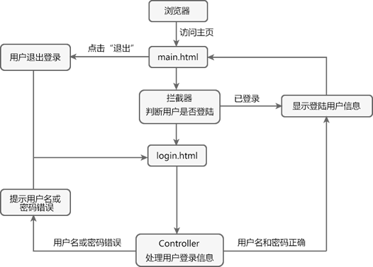
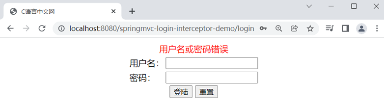
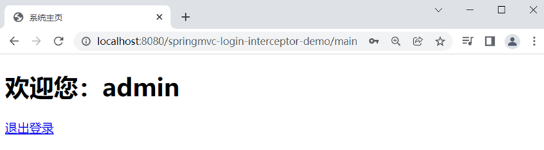
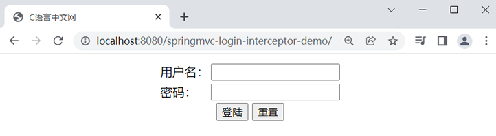

首页 > Spring MVC
Spring MVC拦截器案例：用户登录权限验证
本节，我们将通过 Spring MVC 拦截器（Interceptor）来实现一个用户登录权限验证的案例。
在本案例中，只有登录后的用户才能访问系统主页，若没有登录就直接访问主页，则拦截器会将请求拦截并跳转到登录页面，同时在登录页面中给出提示信息。若用户登陆时，用户名或密码错误，则登录页也会显示相应的提示信息。已登录的用户在系统主页点击“退出登录”时，跳转会登录页面，流程图如下。
在了解了案例的整个执行流程后，接下来我们就具体实现实例来实现用户登录权限验证，具体步骤如下。
1. 新建一个名为“springmvc-login-interceptor-demo”的 Web 工程，并将与 Spring MVC 相关的依赖包引入到工程中。
2. 在 web.xml 中配置 Spring MVC 的 DispatcherServlet、请求和响应编码过滤器等信息，配置内容如下。
3. 在 src 目录下创建一个名为 springMVC.xml 的 Spring MVC 配置文件，配置内容如下。
4. 在 net.biancheng.c.entity 包下创建一个 User 类，代码如下。
4. 在 net.biancheng.c.controller 包下，创建一个名为 LoginController 的 Controller 类，代码如下。
5. 在 net.biancheng.c.interceptor 包下，创建一个名为 LoginInterceptor 的自定义登陆拦截器类，代码如下。
6. 在 webapp/WEB-INF 下新建一个 templates 目录，并在该目录下创建一个 login.html，代码如下。
7. 在 webapp/WEB-INF 下的 tempaltes 目录中，创建一个 main.html，代码如下。
8. 将 springmvc-login-interceptor-demo 部署到 Tomcat 服务器中，启动 Tomcat。
9. 使用浏览器访问“http://localhost:8080/springmvc-login-interceptor-demo/main”，结果如下图。

图2：登录拦截
10. 在登录页，输入用户名（admin）和密码（123456），结果如下图。
11. 在登录页输入用户名（admin）和密码（admin），跳转到系统主页，如下图。
12. 点击下方的“退出登录”链接，返回登录页，结果如下图。
在本案例中，只有登录后的用户才能访问系统主页，若没有登录就直接访问主页，则拦截器会将请求拦截并跳转到登录页面，同时在登录页面中给出提示信息。若用户登陆时，用户名或密码错误，则登录页也会显示相应的提示信息。已登录的用户在系统主页点击“退出登录”时，跳转会登录页面，流程图如下。

图1：用户登录流程
在了解了案例的整个执行流程后，接下来我们就具体实现实例来实现用户登录权限验证，具体步骤如下。
1. 新建一个名为“springmvc-login-interceptor-demo”的 Web 工程，并将与 Spring MVC 相关的依赖包引入到工程中。
2. 在 web.xml 中配置 Spring MVC 的 DispatcherServlet、请求和响应编码过滤器等信息，配置内容如下。
<?xml version="1.0" encoding="UTF-8"?>
<web-app xmlns="http://xmlns.jcp.org/xml/ns/javaee"
xmlns:xsi="http://www.w3.org/2001/XMLSchema-instance"
xsi:schemaLocation="http://xmlns.jcp.org/xml/ns/javaee http://xmlns.jcp.org/xml/ns/javaee/web-app_4_0.xsd"
version="4.0">
<!--请求和响应的字符串过滤器-->
<filter>
<filter-name>CharacterEncodingFilter</filter-name>
<filter-class>org.springframework.web.filter.CharacterEncodingFilter</filter-class>
<init-param>
<param-name>encoding</param-name>
<param-value>UTF-8</param-value>
</init-param>
<init-param>
<param-name>forceResponseEncoding</param-name>
<param-value>true</param-value>
</init-param>
</filter>
<filter-mapping>
<filter-name>CharacterEncodingFilter</filter-name>
<url-pattern>/*</url-pattern>
</filter-mapping>
<!--来处理 PUT 和 DELETE 请求的过滤器-->
<filter>
<filter-name>HiddenHttpMethodFilter</filter-name>
<filter-class>org.springframework.web.filter.HiddenHttpMethodFilter</filter-class>
</filter>
<filter-mapping>
<filter-name>HiddenHttpMethodFilter</filter-name>
<url-pattern>/*</url-pattern>
</filter-mapping>
<!-- 配置SpringMVC的前端控制器，对浏览器发送的请求统一进行处理 -->
<servlet>
<servlet-name>dispatcherServlet</servlet-name>
<servlet-class>org.springframework.web.servlet.DispatcherServlet</servlet-class>
<!--配置 DispatcherServlet 的一个初始化参数：spring mvc 配置文件按的位置和名称-->
<init-param>
<param-name>contextConfigLocation</param-name>
<param-value>classpath:springMVC.xml</param-value>
</init-param>
<!--作为框架的核心组件，在启动过程中有大量的初始化操作要做
而这些操作放在第一次请求时才执行会严重影响访问速度
因此需要通过此标签将启动控制DispatcherServlet的初始化时间提前到服务器启动时-->
<load-on-startup>1</load-on-startup>
</servlet>
<servlet-mapping>
<servlet-name>dispatcherServlet</servlet-name>
<!--设置springMVC的核心控制器所能处理的请求的请求路径
/所匹配的请求可以是/login或.html或.js或.css方式的请求路径
但是/不能匹配.jsp请求路径的请求-->
<url-pattern>/</url-pattern>
</servlet-mapping>
</web-app>
3. 在 src 目录下创建一个名为 springMVC.xml 的 Spring MVC 配置文件，配置内容如下。
<?xml version="1.0" encoding="UTF-8"?>
<beans xmlns="http://www.springframework.org/schema/beans"
xmlns:xsi="http://www.w3.org/2001/XMLSchema-instance"
xmlns:context="http://www.springframework.org/schema/context"
xmlns:mvc="http://www.springframework.org/schema/mvc"
xsi:schemaLocation="http://www.springframework.org/schema/beans
http://www.springframework.org/schema/beans/spring-beans.xsd
http://www.springframework.org/schema/context
https://www.springframework.org/schema/context/spring-context.xsd http://www.springframework.org/schema/mvc https://www.springframework.org/schema/mvc/spring-mvc.xsd">
<!--开启组件扫描-->
<context:component-scan base-package="net.biancheng.c"></context:component-scan>
<!-- 配置 Thymeleaf 视图解析器 -->
<bean id="viewResolver"
class="org.thymeleaf.spring5.view.ThymeleafViewResolver">
<property name="order" value="1"/>
<property name="characterEncoding" value="UTF-8"/>
<property name="templateEngine">
<bean class="org.thymeleaf.spring5.SpringTemplateEngine">
<property name="templateResolver">
<bean class="org.thymeleaf.spring5.templateresolver.SpringResourceTemplateResolver">
<!-- 视图前缀 -->
<property name="prefix" value="/WEB-INF/templates/"/>
<!-- 视图后缀 -->
<property name="suffix" value=".html"/>
<property name="templateMode" value="HTML5"/>
<property name="characterEncoding" value="UTF-8"/>
</bean>
</property>
</bean>
</property>
</bean>
<!-- view-name：设置请求地址所对应的视图名称-->
<mvc:view-controller path="/" view-name="login"></mvc:view-controller>
<!-- view-name：设置请求地址所对应的视图名称-->
<mvc:view-controller path="/index.html" view-name="login"></mvc:view-controller>
<!-- view-name：设置请求地址所对应的视图名称-->
<mvc:view-controller path="/main" view-name="main"></mvc:view-controller>
<!-- 当SpringMVC中设置任何一个view-controller时，其他控制器中的请求映射将全部失效，此时需要在SpringMVC的核心配置文件中设置开启mvc注解驱动的标签-->
<mvc:annotation-driven></mvc:annotation-driven>
<!--将静态资源交给Tomcat 默认的 Servlet 处理-->
<mvc:default-servlet-handler/>
<!--配置拦截器-->
<mvc:interceptors>
<!--拦截器 1-->
<mvc:interceptor>
<!--配置拦截器拦截的请求路径-->
<mvc:mapping path="/**"/>
<!--配置拦截器不需要拦截的请求路径-->
<mvc:exclude-mapping path="/login"/>
<mvc:exclude-mapping path="/"/>
<!--定义在 <mvc:interceptors> 下，表示拦截器只对指定路径的请求进行拦截-->
<bean id="interceptor" class="net.biancheng.c.interceptor.LoginInterceptor"></bean>
</mvc:interceptor>
</mvc:interceptors>
</beans>
4. 在 net.biancheng.c.entity 包下创建一个 User 类，代码如下。
package net.biancheng.c.entity;
public class User {
private String userId;
private String userName;
private String password;
public String getUserId() {
return userId;
}
public void setUserId(String userId) {
this.userId = userId;
}
public String getUserName() {
return userName;
}
public void setUserName(String userName) {
this.userName = userName;
}
public String getPassword() {
return password;
}
public void setPassword(String password) {
this.password = password;
}
@Override
public String toString() {
return "User{" +
"userId='" + userId + '\'' +
", userName='" + userName + '\'' +
", password='" + password + '\'' +
'}';
}
}
4. 在 net.biancheng.c.controller 包下，创建一个名为 LoginController 的 Controller 类，代码如下。
package net.biancheng.c.controller;
import net.biancheng.c.entity.User;
import org.springframework.stereotype.Controller;
import org.springframework.web.bind.annotation.RequestMapping;
import javax.servlet.http.HttpServletRequest;
import javax.servlet.http.HttpSession;
@Controller
public class LoginController {
/**
* 登录
*
* @param user
* @param request
* @return
*/
@RequestMapping("/login")
public String login(User user, HttpServletRequest request) {
//验证用户名和密码
if (user != null && "admin".equals(user.getPassword()) && "admin".equals(user.getUserName())) {
HttpSession session = request.getSession();
//将用户信息放到 session 域中
session.setAttribute("loginUser", user);
//重定向到商品列表
return "redirect:/main";
}
//提示用户名或密码错误
request.setAttribute("msg", "用户名或密码错误");
return "login";
}
/**
* 登出
*
* @param user
* @param request
* @return
*/
@RequestMapping("/logout")
public String Logout(User user, HttpServletRequest request) {
//session 失效
request.getSession().invalidate();
return "redirect:/";
}
}
5. 在 net.biancheng.c.interceptor 包下，创建一个名为 LoginInterceptor 的自定义登陆拦截器类，代码如下。
package net.biancheng.c.interceptor;
import org.springframework.web.servlet.HandlerInterceptor;
import javax.servlet.http.HttpServletRequest;
import javax.servlet.http.HttpServletResponse;
public class LoginInterceptor implements HandlerInterceptor {
/**
* 目标方法执行前
*
* @param request
* @param response
* @param handler
* @return
* @throws Exception
*/
@Override
public boolean preHandle(HttpServletRequest request, HttpServletResponse response, Object handler) throws Exception {
Object loginUser = request.getSession().getAttribute("loginUser");
if (loginUser == null) {
//未登录，返回登陆页
request.setAttribute("msg", "您没有权限进行此操作，请先登录！");
request.getRequestDispatcher("/").forward(request, response);
return false;
} else {
//放行
return true;
}
}
}
6. 在 webapp/WEB-INF 下新建一个 templates 目录，并在该目录下创建一个 login.html，代码如下。
<!DOCTYPE html>
<html lang="en" xmlns:th="http://www.thymeleaf.org">
<head>
<meta charset="UTF-8">
<title>C语言中文网</title>
</head>
<body>
<form th:action="@{/login}" method="post">
<table style="margin: auto">
<tr>
<td th:if="${not #strings.isEmpty(msg)}" colspan="2" align="center">
<p style="color: red;margin: auto" th:text="${msg}"></p>
</td>
</tr>
<tr>
<td>用户名：</td>
<td><input type="text" name="userName" required><br></td>
</tr>
<tr>
<td>密码：</td>
<td><input type="password" name="password" required><br></td>
</tr>
<tr>
<td colspan="2" align="center">
<input type="submit" value="登陆">
<input type="reset" value="重置">
</td>
</tr>
</table>
</form>
</body>
</html>
7. 在 webapp/WEB-INF 下的 tempaltes 目录中，创建一个 main.html，代码如下。
<!DOCTYPE html>
<html lang="en" xmlns:th="http://www.thymeleaf.org">
<head>
<meta charset="UTF-8">
<title>系统主页</title>
</head>
<body>
<h1 th:text="'欢迎您：'+${session.loginUser.getUserName()}" th:if="${not #strings.isEmpty(session.loginUser)}"></h1>
<a th:href="@{/logout}">退出登录</a>
</body>
</html>
8. 将 springmvc-login-interceptor-demo 部署到 Tomcat 服务器中，启动 Tomcat。
9. 使用浏览器访问“http://localhost:8080/springmvc-login-interceptor-demo/main”，结果如下图。
图2：登录拦截
10. 在登录页，输入用户名（admin）和密码（123456），结果如下图。

图3：用户名或密码错误
图3：用户名或密码错误
11. 在登录页输入用户名（admin）和密码（admin），跳转到系统主页，如下图。

图4：系统主页
图4：系统主页
12. 点击下方的“退出登录”链接，返回登录页，结果如下图。

图5：返回登录页
图5：返回登录页
关注公众号「站长严长生」，在手机上阅读所有教程，随时随地都能学习。内含一款搜索神器，免费下载全网书籍和视频。

微信扫码关注公众号